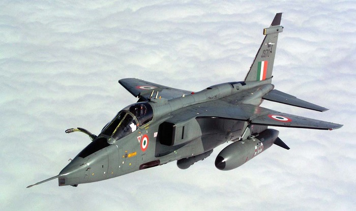

The Mig-21 is a Russian built cold-war era supersonic fighter and interceptor. It had a fierce reputation in the skies over vietnam in the hands of the russians and NVA however india despite being the largest buyer of the aircraft has been plagued by reliability problems with the platform since the 70s and currently only operates an estimated 113 Mig-21's as of 2019
The Mig-27 is a Russian Ground attack aircraft that was produced for the Indian Air force under Liscense by Hindustan Aeronautics. Recently the aircraft was retired due to engine problems which resulted in a dozen or so aircraft being lost in crashes after a recent refit.
The Mig-29 was part of russias anwser to the american F-15 an F-16. Once again, India Imported this Aircraft for its own use. This Air Superiority fighter can be carrier based and thus has been used both the Indian Air Force and Navy.
The Su-30 MKI is a Variant of the Russian Su-30 Built under liscense in India by Hindustan Aeronautics. This particular variant is designed to be an all-conditions, long range multirole Air Superiority fighter that also has supermaneuver capabilites

The SEPCAT Jaguar is originally an Anglo-French Attack aircraft that currently is only used by the Indian Airforce.
The Mirage 2000 is a French Multirole Aircraft which were purchased by India in response to pakistan purchaseing F-16 fighters from the U.S which the indian airforce believed to be superior to its current inventory of Migs.

The Rafale is a French Multirole fighter Purchased by India to replace its older Mig 21. However India has only recieved limited numbers of the Aircraft due to contract disagreements over liscensed manufacturing between France, India and Dassault.